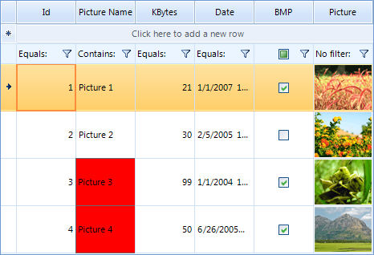
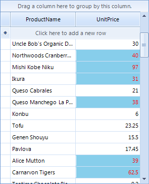

UI Virtualization
RadGridView uses virtualization for its cells and rows. To put it simply, this means that when binding to a
DataTable with 1000 rows, you get 1000 data row objects created in RadGridView
(of type GridViewDataRowInfo).
However, not all data row objects can be visible at the same time in the RadGridView estate area in your application.
This is why only the visual rows that can be shown in the estate area get created (these visual rows are of type
GridDataRowElement), or about 20-30 rows for an average application with medium-sized RadGridView.
These visual elements are reused during scrolling, filtering and other operations with the grid,
meaning dramatically improved performance and memory footprint as only a small number of visual items are created.
Formatting events
Because of the virtualization you cannot access UI elements at design time or directly by using the
Element tree or a property. Instead, you have to use formatting events. These events in RadGridView are
CellFormatting for data cells and RowFormatting for data rows.
When customizing system rows and cells,
one should use ViewCellFormatting and ViewRowFormatting events instead.
[Read more](/gridview/cells/formatting-cells)
Here is a quick sample:
[C#]
void radGridView1_CellFormatting3(object sender, CellFormattingEventArgs e)
{
if (e.CellElement.ColumnInfo.Name == "Picture Name")
{
if (e.CellElement.RowInfo.Cells["KBytes"].Value != null)
{
if ((decimal)e.CellElement.RowInfo.Cells["KBytes"].Value > 30)
{
e.CellElement.DrawFill = true;
e.CellElement.GradientStyle = GradientStyles.Solid;
e.CellElement.BackColor = Color.Red;
e.CellElement.BorderBoxStyle = BorderBoxStyle.SingleBorder;
}
else
{
ResetProperties(e.CellElement);
}
}
}
else
{
ResetProperties(e.CellElement);
}
}
void ResetProperties(GridCellElement cell)
{
cell.ResetValue(LightVisualElement.DrawFillProperty, ValueResetFlags.Local);
cell.ResetValue(LightVisualElement.GradientStyleProperty, ValueResetFlags.Local);
cell.ResetValue(VisualElement.BackColorProperty, ValueResetFlags.Local);
cell.ResetValue(LightVisualElement.BorderBoxStyleProperty, ValueResetFlags.Local);
}
[VB.NET]
Private Sub radGridView1_CellFormatting3(ByVal sender As Object, ByVal e As CellFormattingEventArgs) Handles RadGridView1.CellFormatting
If e.CellElement.ColumnInfo.Name = "Picture Name" Then
If e.CellElement.RowInfo.Cells("KBytes").Value IsNot Nothing Then
If CDec(e.CellElement.RowInfo.Cells("KBytes").Value) > 30 Then
e.CellElement.DrawFill = True
e.CellElement.GradientStyle = GradientStyles.Solid
e.CellElement.BackColor = Color.Red
e.CellElement.BorderBoxStyle = BorderBoxStyle.SingleBorder
Else
ResetProperties(e.CellElement)
End If
End If
Else
ResetProperties(e.CellElement)
End If
End Sub
Private Sub ResetProperties(ByVal cell As GridCellElement)
cell.ResetValue(LightVisualElement.DrawFillProperty, ValueResetFlags.Local)
cell.ResetValue(LightVisualElement.GradientStyleProperty, ValueResetFlags.Local)
cell.ResetValue(VisualElement.BackColorProperty, ValueResetFlags.Local)
cell.ResetValue(LightVisualElement.BorderBoxStyleProperty, ValueResetFlags.Local)
End Sub
'#End Region
Private Sub StyleCells()
CType(New Telerik.WinControls.RadControlSpy.RadControlSpyForm(), Telerik.WinControls.RadControlSpy.RadControlSpyForm).Show()
'#Region "uiVirtStyle"
For i As Integer = 0 To Me.radGridView1.Rows.Count - 1
If Me.radGridView1.Rows(i).Cells("KBytes").Value IsNot Nothing Then
If CDec(Me.radGridView1.Rows(i).Cells("KBytes").Value) > 30 Then
Me.radGridView1.Rows(i).Cells("Picture Name").Style.CustomizeFill = True
Me.radGridView1.Rows(i).Cells("Picture Name").Style.CustomizeBorder = True
Me.radGridView1.Rows(i).Cells("Picture Name").Style.BackColor = Color.Red
Me.radGridView1.Rows(i).Cells("Picture Name").Style.BorderGradientStyle = GradientStyles.Solid
Me.radGridView1.Rows(i).Cells("Picture Name").Style.BorderBoxStyle = BorderBoxStyle.SingleBorder
End If
End If
Next i
'#End Region
End Sub
End Class

Style property
Another solution is the Style property which is available when accessing logical cell objects.
It allows for directly setting visual properties that will reflect the specified cell element.
Read more
Here is a quick sample:
[C#]
for (int i = 0; i < this.radGridView1.Rows.Count; i++)
{
if (this.radGridView1.Rows[i].Cells["KBytes"].Value != null)
{
if ((decimal)this.radGridView1.Rows[i].Cells["KBytes"].Value > 30)
{
this.radGridView1.Rows[i].Cells["Picture Name"].Style.CustomizeFill = true;
this.radGridView1.Rows[i].Cells["Picture Name"].Style.CustomizeBorder = true;
this.radGridView1.Rows[i].Cells["Picture Name"].Style.BackColor = Color.Red;
this.radGridView1.Rows[i].Cells["Picture Name"].Style.BorderGradientStyle = GradientStyles.Solid;
this.radGridView1.Rows[i].Cells["Picture Name"].Style.BorderBoxStyle = BorderBoxStyle.SingleBorder;
}
}
}
[VB.NET]
For i As Integer = 0 To Me.radGridView1.Rows.Count - 1
If Me.radGridView1.Rows(i).Cells("KBytes").Value IsNot Nothing Then
If CDec(Me.radGridView1.Rows(i).Cells("KBytes").Value) > 30 Then
Me.radGridView1.Rows(i).Cells("Picture Name").Style.CustomizeFill = True
Me.radGridView1.Rows(i).Cells("Picture Name").Style.CustomizeBorder = True
Me.radGridView1.Rows(i).Cells("Picture Name").Style.BackColor = Color.Red
Me.radGridView1.Rows(i).Cells("Picture Name").Style.BorderGradientStyle = GradientStyles.Solid
Me.radGridView1.Rows(i).Cells("Picture Name").Style.BorderBoxStyle = BorderBoxStyle.SingleBorder
End If
End If
Next i
'#End Region
End Sub
End Class

Conditional formatting
Another feature that we provide is the conditional formatting which is available for end user via context menu.
Read more
Here is a quick sample of how conditional formatting can be set by code:
[C#]
ConditionalFormattingObject obj = new ConditionalFormattingObject("MyCondition", ConditionTypes.Greater, "30", "", false);
obj.CellBackColor = Color.SkyBlue;
obj.CellForeColor = Color.Red;
obj.TextAlignment = ContentAlignment.MiddleRight;
this.radGridView1.Columns["UnitPrice"].ConditionalFormattingObjectList.Add(obj);
[VB.NET]
Dim obj As New ConditionalFormattingObject("MyCondition", ConditionTypes.Greater, "30", "", False)
obj.CellBackColor = Color.SkyBlue
obj.CellForeColor = Color.Red
obj.TextAlignment = ContentAlignment.MiddleRight
Me.RadGridView1.Columns("UnitPrice").ConditionalFormattingObjectList.Add(obj)
